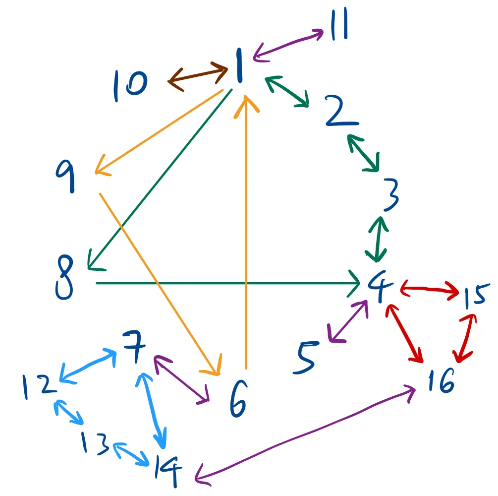

If
is an invertible
matrix, then for each
in
,
the equation
has the unique solution
Proof
Show that solution exists
Substitute
into
,
LHS =
= RHS.
Show that solution is unique.
Suppose there is some vector
such that
,
then
.
Property: If
is invertible, then
is invertible, and
Property: If
and
are
invertible matrices, then so is
and
Proof
To find some matrix
s.t.
and
If
,
then
.
Similar argument applies for
.
Property: If
is an invertible matrix, then so is
,
and
Proof
To show that
is the inverse of
.
Considering the product of
and
,
and the product of
and
,
4.1 Elementary matrix
An elementary matrix
is created by performing exactly one elementary row operation on an
identity matrix
.
Multiplying a matrix
by
on the left
()
performs that same row operation on
.
For example,
Every elementary matrix is
invertible, and the inverse is another elementary matrix that reverses
the original transformation. For example,
An
matrix
is invertible iff
is row equivalent to
.
The same sequence of EROs that reduces
to
transforms
to
.
Proof
Suppose
is an invertible
matrix, then
has a unique solution for any
.
This means the RREF form of
has a pivot in every row and column. For a
matrix, this has to be
.
Therefore
is row equivalent to
.
There exists some sequence of EROs that transforms
to
,
and each row operation corresponds to multiplication by an elementary
matrix. This can be expressed as
is invertible since
RHS=
is invertible and the product of elementary matrices is
invertible.
Multiplying by
on the right on both sides,
Therefore,
4.1.1 Example
To find the inverse of
,
we augment it with the identity matrix
and perform Gauss-Jordan elimination:
Step 1: Interchange
and
()
Step 2: Eliminate
()
Step 3: Eliminate
()
Step 4: Scale
to get a leading 1
()
Step 5: Eliminate
and
(
and
)
Therefore, the inverse matrix is
4.1.2 Invertible Matrix
Theorem
Let
be an
matrix. Then the following statements are logically equivalent:
is an invertible (non-singular) matrix.
is row equivalent to
.
has
pivot positions.
has only the trivial solution.
The columns of
form a linearly independent set.
has at least one (in fact, unique) solution for each
in
.
The columns of
span
.
There is an
matrix
such that
.
There is an
matrix
such that
.
is an invertible matrix.
The columns of
form a basis for
.
.
.
Rank of
.
.
.

The links between the statements of invertible matrix
theorem.
:
.
:
Given
such that
,
:
Given
such that
,
choose
,
5 Matrix Factorisation
To solve sequence of equations like
,
it is inefficient to first compute the inverse
and then multiply it by each vector,
.
Instead, the efficient solution is to decompose
into
.
where
is unit lower triangular matrix,
is upper triangular matrix.
5.1 Deriving L & U
Assumption
can be reduced to echelon form without requiring any row
interchanges.
First reduce matrix
to
,
using elementary row operations. Multiply
by a sequence of unit lower triangular elementary matrices
(),
such that
Then
.
Example Consider a
matrix:
Step 1: Row Reduction to find
.
Apply elementary row operations to eliminate the entries below the
pivots to reach echelon form.
First Column: The first pivot is the
in row 1, column 1. Eliminate the entries below it. Multiply by
(which represents
):
Multiply by
(which represents
):
Second Column: The new pivot is the
in row 2, column 2. Eliminate the entry below it. * Multiply by
(which represents
):
Step 2: Two Methods to Construct
Since
has 3 rows,
will be a
unit lower triangular matrix.
Method 1: The "Multiplier" Method (Fastest).
At each pivot column, divide the eliminated entries by the pivot for
that column, and place the result directly into
.
Column 1 Multipliers: The pivot is
.
Divide 6 and 4 by 2 respectively.
Column 2 Multipliers: The new pivot is
.
Divide -4 by -1.
Placing these multipliers below the diagonal of 1s gives you
:
Method 2: The Elementary Inverse Method.
Mathematically,
is formed by the inverse of the elementary matrices used to reach
:
.
Construct
by simply taking the nonzero off-diagonal elements of the elementary
inverse matrices and placing them into the appropriate positions in
.
5.2 Solving using
&
Forward
substitution Defining
,
solve for
Backward substitution Solve
Example
Given the linear system
,
where:
Matrix
has been factored into
and
:
Forward Substitution
()
Set up the lower triangular system to solve for the intermediate
vector
:
Solve the equations sequentially from top to bottom:
This gives us our intermediate vector
:
Step 2: Backward Substitution
()
Set up the upper triangular system using the newly found vector
to solve for
:
Solve the equations sequentially from bottom to top:
Final Solution:
5.3 Zero Pivots:
Factorization
The standard
factorization assumes matrix
can be reduced to echelon form without row interchanges. If a pivot
becomes zero, you must swap rows, which breaks the standard
algorithm.
To solve this, we pre-swap the rows of
using a Permutation Matrix
,
which is an Identity matrix with its rows swapped. This yields the
generalized factorization:
Example: Given matrix
:
If we attempt standard row reduction
(
and
),
we hit a zero pivot in the second column:
To fix this, we swap Row 2 and Row 3 using permutation matrix
:
Calculate
to generate the row-swapped matrix:
Now, factor
normally into
and
:
Using pivot 1 in column 1:
,
and
.
The entry below the second pivot
()
is already
.